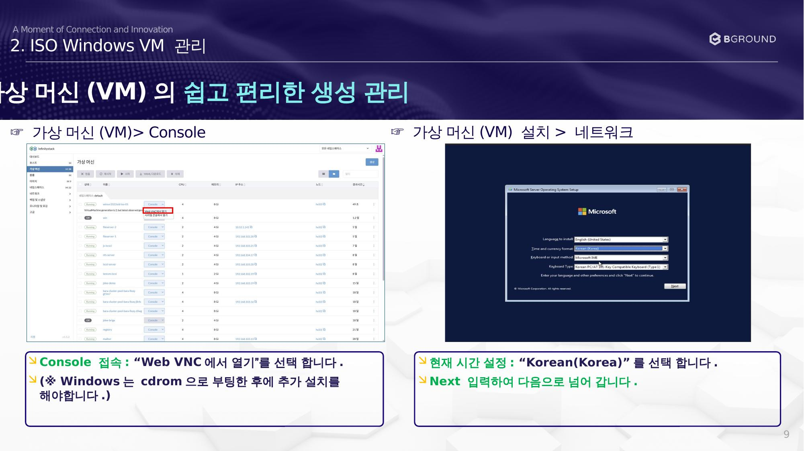
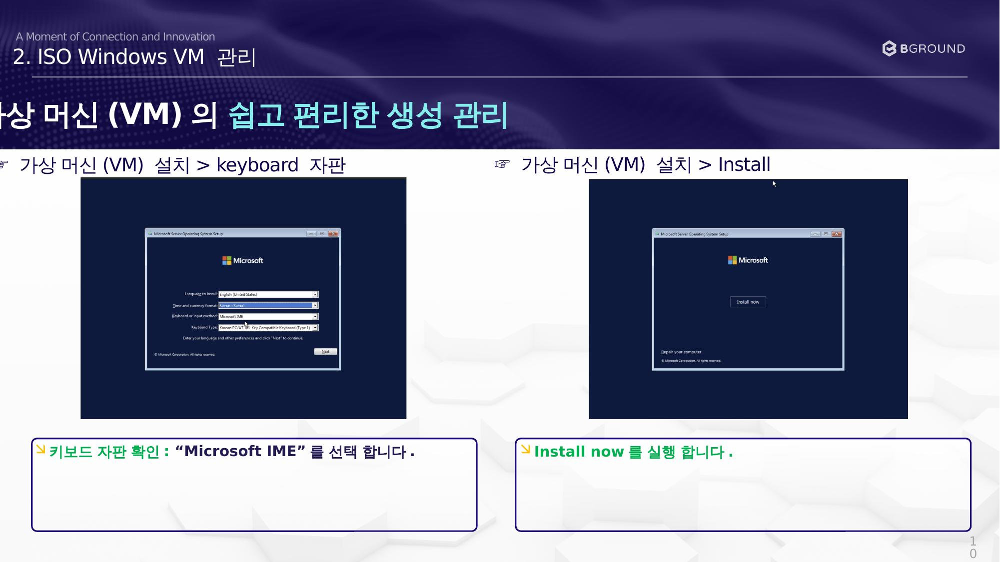
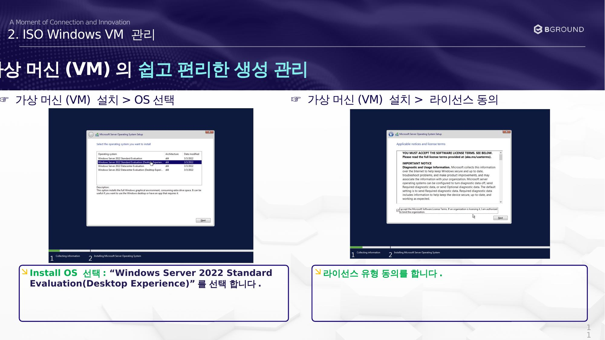
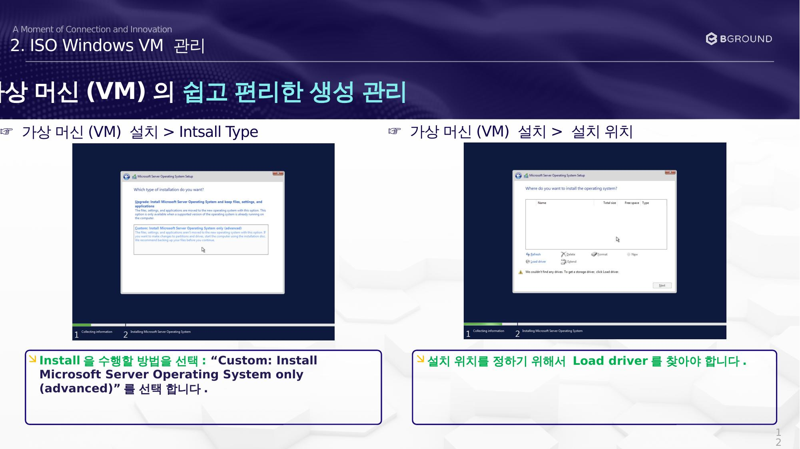
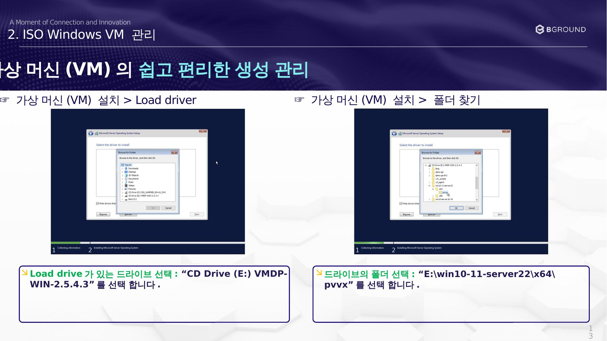
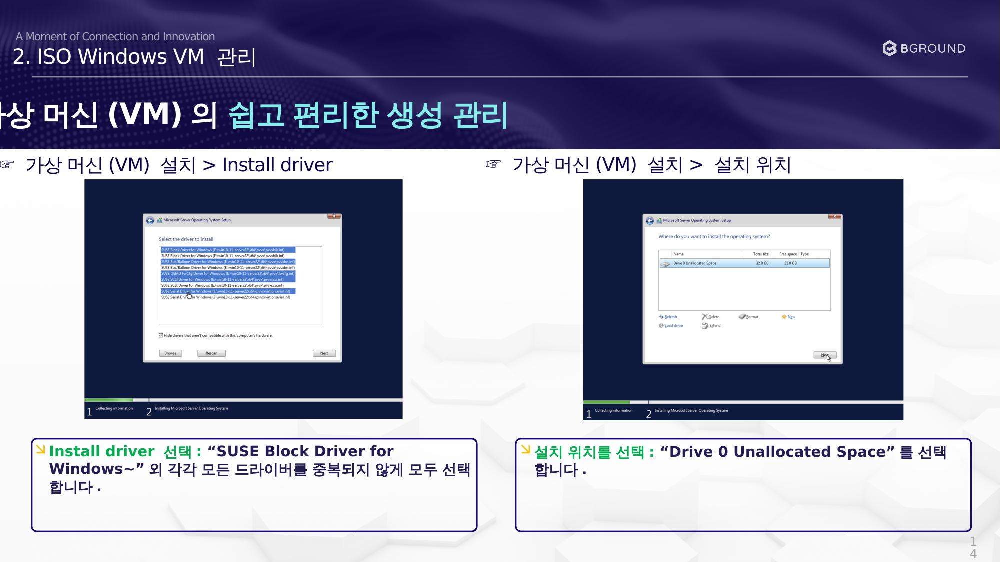
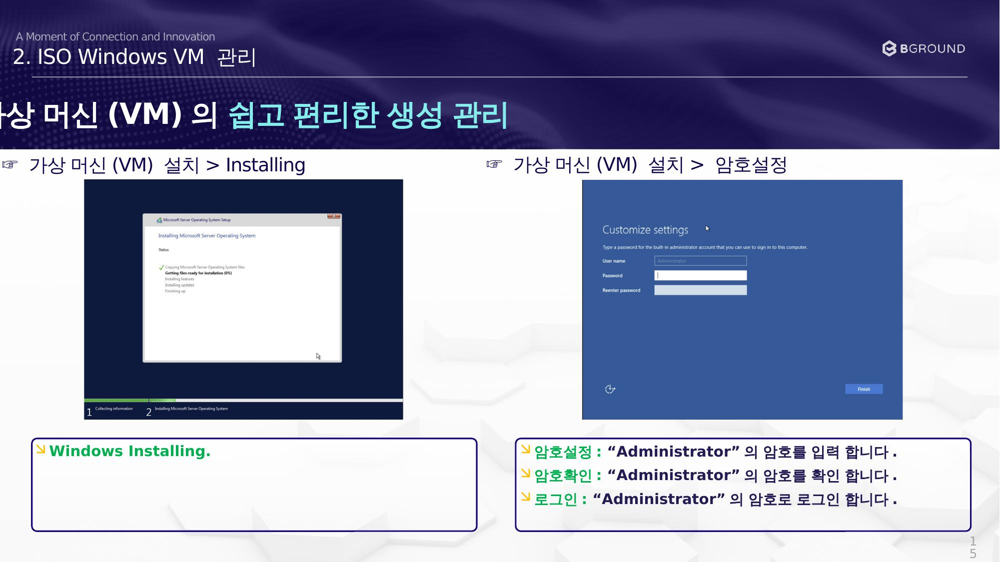
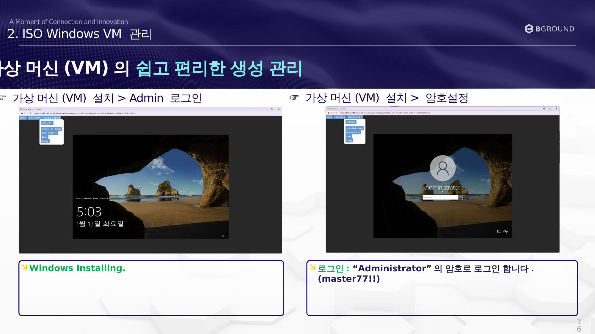

Windows 설치¶
Console에 접속하여 Windows OS를 설치합니다.
Console 접속 및 언어 설정¶

☞ 가상 머신(VM) 설치 > Console¶
Note
Windows는 cdrom으로 부팅한 후 추가 설치를 해야합니다.
- Console 접속: "Web VNC에서 열기" 를 선택합니다.
- 현재 시간 설정: "Korean(Korea)" 를 선택합니다.
- Next 입력하여 다음으로 넘어갑니다.
키보드 및 설치 시작¶

☞ 가상 머신(VM) 설치 > keyboard 자판¶
- 키보드 자판 확인: "Microsoft IME" 를 선택합니다.
- Install now 를 실행합니다.
OS 선택 및 라이선스 동의¶

☞ 가상 머신(VM) 설치 > OS 선택¶
- Install OS 선택: "Windows Server 2022 Standard Evaluation (Desktop Experience)" 를 선택합니다.
- 라이선스 유형 동의를 합니다.
설치 유형 및 위치 선택¶

☞ 가상 머신(VM) 설치 > Install Type¶
- Install을 수행할 방법을 선택: "Custom: Install Microsoft Server Operating System only (advanced)" 를 선택합니다.
- 설치 위치를 정하기 위해서 Load driver 를 찾아야 합니다.
드라이버 폴더 선택¶

☞ 가상 머신(VM) 설치 > 폴더 찾기¶
| 항목 | 값 |
|---|---|
| 드라이브 | CD Drive (E:) VMDP-WIN-2.5.4.3 |
| 폴더 경로 | E:\win10-11-server22\x64\pvvx |
드라이버 설치 및 설치 위치¶

☞ 가상 머신(VM) 설치 > Install driver¶
- Install driver 선택: "SUSE Block Driver for Windows~" 외 각각 모든 드라이버를 중복되지 않게 모두 선택합니다.
- 설치 위치를 선택: "Drive 0 Unallocated Space" 를 선택합니다.
Windows 설치 진행 및 암호 설정¶

☞ 가상 머신(VM) 설치 > 암호 설정¶
- Windows Installing 진행을 기다립니다.
- 암호 설정: "Administrator" 의 암호를 입력합니다.
- 암호 확인: "Administrator" 의 암호를 확인합니다.
- 로그인: "Administrator" 의 암호로 로그인합니다.
Administrator 로그인¶

☞ 가상 머신(VM) 설치 > Admin 로그인¶
- Windows 설치 완료 후 로그인합니다.
- 로그인: "Administrator" 의 암호로 로그인합니다.
보안 주의
실제 운영 환경에서는 기본 예시 암호를 반드시 변경하세요.